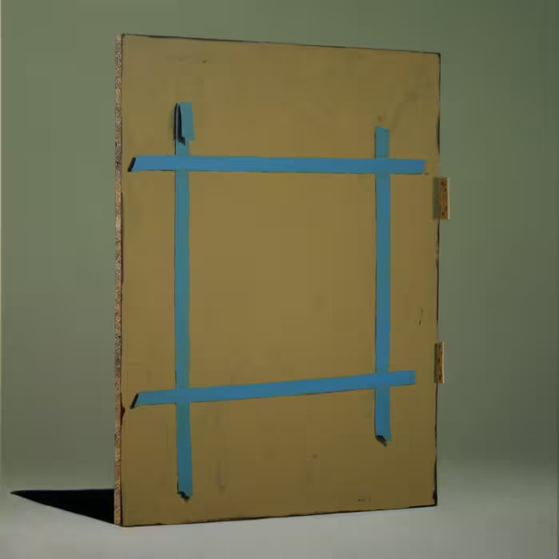

这里是 Land of Knowledge。名字听上去像一片辽阔的疆域，其实更像一张随手绘成的手稿地图：标下走过的路，圈出踩过的坑，也留着几条下次还想折返的岔路。
自我介绍

嗨，我是叶白（yebaihyp）
在代码与文字之间来回走路的人，习惯把路上的见闻，一点一点记在这里。
为什么写
问题解决之后，往往也就被遗忘了。几个月后重逢，只剩一个模糊的影子，像雾里的灯。
所以我把过程写下来，给未来的自己留一条可以循着找回来的线索。若它恰好也照亮了某个深夜里搜索同一个问题的陌生人，那便是意外的馈赠。
这里不追热点，也不写“三分钟精通”。更多的是一次具体的排查、一个设计上的取舍，或是一本书读完后真正沉淀下来的那一小部分。文章会不断修订，如同反复擦拭的旧物，所以每一篇都标着最后更新的时间。
联系与边界
评论由 GitHub Discussions 承载；尚未登录 GitHub 的读者，会先看到 giscus 的登录提示。
这是一方私人的小天地，不提供任何商业服务，也不代表任何雇主或组织的观点。
END OF PAGE
返回首页